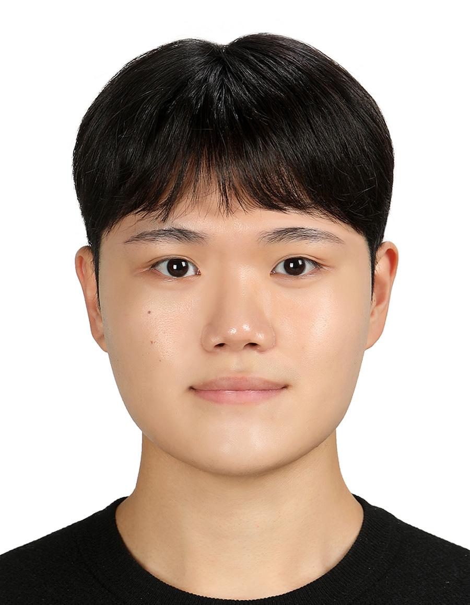
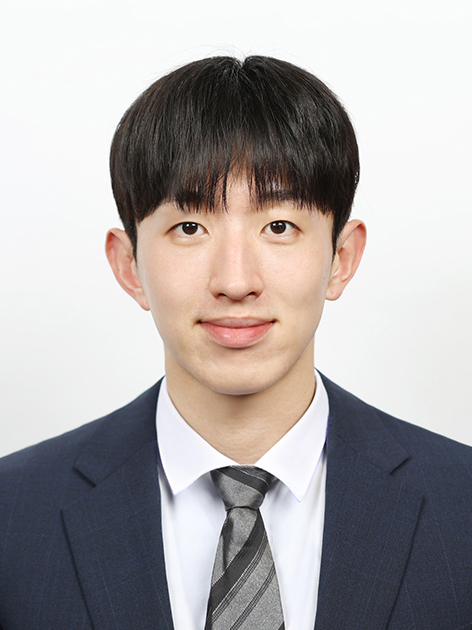
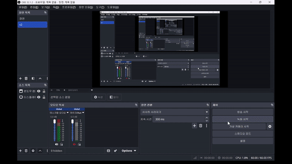
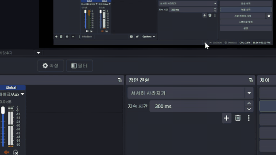

OH! GYM! · 제1기 휴머노이드 트레이너
휴머노이드 강화학습 팀 포트폴리오
로보티즈 AI Sapiens · Open Humanoid Gym 지원
ONE-LINE
시뮬레이션–실물 다계층 검증·데이터 취득(P1)과 강화학습 정책 설계(P2)를 모두 경험한 2인 팀. 모션 제작 → 강화학습 → 환경 데이터 취득 → Sim-to-Real 파이프라인 전 구간에 즉시 투입 가능하다.
역량 매핑
OH GYM 과제 흐름의 요구 역량과 보유 근거를 직접 대응시켰다.
| OH GYM 요구 역량 | 충족 근거 | 근거 |
|---|---|---|
| 강화학습(PPO) 정책 학습·보상 설계 | PPO 정책 학습·평가, 보상함수 설계 | P2 |
| Sim-to-Real / 일반화 | 도메인 랜덤화로 미지 40개 플랜트 일반화 검증 | P2 |
| 제어·동역학 기반 이해 | 근궤적 PID, 2차 관절 서보 모델링·극점 배치 | P2 |
| 시뮬레이터 기반 휴머노이드 강화학습 | ROBOTIS OP3 공차기 PPO+DR — 방향 크로스오버·v6/v7 프런티어(완료) | P3 |
| 다양한 환경에서의 데이터 취득 | 웹2D→Webots3D→실물 3계층 검증, 센서 로그 | P1 |
| 시뮬레이터 활용 | Webots 3D 물리 시뮬레이션 구축·동기화 | P1 |
| 임베디드·HW 통합 | Raspberry Pi+Arduino 이원화, A*·QR·YOLO·FSM | P1 |
주황 행은 프로젝트(P3)로 확보한 역량이다(OP3 공차기 PPO 완료).
팀 — MeNaldo

전민제
- P1 HW/EE — 설계·조립·BOM 관리
- P2 결과 분석·해석 — 소논문 작성
- P3 PID & RL 알고리즘

박형진
- P1 SIM/SW — 가상환경 생성·AI 알고리즘
- P2 1-DOF 제어 시뮬레이션
- P3 MuJoCo 환경 구축·OP3 학습
P1 — 저비용 임베디드 자율수거로봇
공동주택 음식물 쓰레기통 자율 수거 시제품 (전민제·박형진, 한양대 종합설계)

시제품 로봇 — QR 정렬 후 쓰레기통 파지·운반
- 3계층 검증: 웹 2D → Webots 3D(R2025a) → 실물 로봇을 WebSocket 실시간 동기화. 풀스케일(200×140, 48동·24빈·4로봇) + 시제품(40×30) 두 모드.
- SW 규모: 142 커밋, Python 63% / TypeScript 32%.
FastAPI·Next.js 14· 비전OpenCV+pyzbar+YOLO. - HW: Raspberry Pi 4 + Arduino Mega 이원화, 초음파×5·IMU·카메라, 모터·서보, 2S LiPo + 전력 설계·BOM 확정.
- 알고리즘: A*(octile+inflation), 최근접 이웃 TSP, QR 측위, YOLO 검출, 수거 FSM, Arduino 독립 안전정지.
- ROS 2 이식: A*→Nav2 NavFn, inflation→InflationLayer, 회전·전후진→DWB까지 매핑 명세(Humble + Nav2 준비 완료).
- 결과: 단일 4빈 241.1s, 2대 분담 makespan 191.7s(20.5%↓), 200×140 격자 경로질의 <50ms.
→ github.com/hyvv-nn/autoproject
P2 — 강화학습 vs 고전제어 관절 서보
외란·파라미터 불확실성 하의 1자유도 관절 서보 제어 (박형진 단독)

1자유도 관절 서보 — PID/PPO 추종 제어 데모
동역학이 잘 알려진 2차 1-DOF 관절 서보에서 근궤적 기반 PID와 심층강화학습(PPO)을 동일 외란·잡음·포화 조건에서 정량 비교하였다.
- 고전: 근궤적 지배극점 배치(ζ=0.707, ωₙ=4) → Kp=2.24, Ki=5.43, Kd=0.35, anti-windup + 미분 필터.
- 학습: PPO
Stable-Baselines3, 보상 r=−5e²−0.0005u², 도메인 랜덤화(관성·마찰·외란), 4병렬환경·VecNormalize·3시드.
| 환경 | 승자 | MAE (rad) |
|---|---|---|
| 명목 선형 플랜트 | PID | PID 0.155 |
| 미지 40개 선형 플랜트 | PID (39/40) | PID 0.139 vs PPO 0.182 |
| 비선형(쿨롱·스틱션) 30개 | PPO (30/30) | PPO 0.113 vs PID 0.207 |
결론: 잘 모델링된 저차 선형계는 고전제어가, 비선형·미지 동역학은 학습 제어가 유리하다는 선택 경계를 실측 제시. 휴머노이드 RL의 학습·전이 방법론과 동일하다.
→ github.com/hyvv-nn/p1-autocontrol
P3 — ROBOTIS OP3 공차기 강화학습
고정베이스 OP3 공차기: 해석적 고전 vs PPO 학습 (박형진)

ROBOTIS OP3 — PPO+도메인 랜덤화 학습 킥
P2 방법론(PPO + 도메인 랜덤화)을 휴머노이드로 확장. ROBOTIS OP3(20-DoF, MuJoCo)가 공을 차되, 원리 기반 해석적 임펄스-최대화 킥과 PPO+DR 킥을 동일 씬에서 공정 비교.
- 헤드라인(방향 크로스오버): 고전=정밀·약함, 학습=약 7배 강함·거친 조준 → 상보적 경계(P2의 선형↔비선형 경계를 방향축으로 확장).
- 다목적 프런티어(3시드): 보상마다 최적이 다름 — 파워=v6goalb, 조준=v6resb, 균형=v6clean (mean±std 확정).
- 정직한 파워 측정: reach(굴림) 대신 공 launch 속도로 → v7(지수 임팩트 보상)이 1.86±0.09 m/s = OP3 planted 하드웨어 천장(~2 m/s, DeepMind 동일 로봇)의 93%. 그 너머는 자유베이스 런업 = 향후 과제.
- 산출물: GitHub(README + 크로스오버·파워 그래프 + 킥 데모 GIF + v1~v7 코드).
→ github.com/hyvv-nn/op3-kick-rl
기술 스택
| 분류 | 항목 |
|---|---|
| 강화학습 | PPO, Stable-Baselines3, 도메인 랜덤화, VecNormalize, 보상 설계 |
| 시뮬레이션 | MuJoCo, Gymnasium, Webots 3D, 웹 2D(Canvas) |
| 제어·동역학 | 근궤적/극점 배치 PID, anti-windup, RK4 적분, 2차계 모델링 |
| 자율주행 | A*(octile·inflation), 최근접이웃 TSP, QR 측위, YOLO, FSM, ROS 2 Nav2 |
| 임베디드·HW | Raspberry Pi 4, Arduino Mega, 초음파·IMU·카메라, 모터 드라이버 |
| SW | Python, FastAPI, Next.js, WebSocket, 시리얼(JSON) |